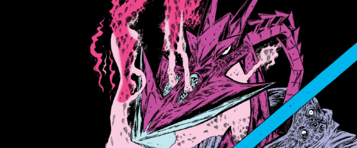

An alien freedom fighter battles a human supremacist in the far future.
| Story Title | Parts | Pages | w indicates a wraparound coverCovers | Year(s) | Issues | Writer | Artist | Colourist | Letterer |
|---|---|---|---|---|---|---|---|---|---|
No supertitleTerror Tube | 1 | 6 | Kevin O'Neill 1 | 1980 | 167 | Pat Mills | Kevin O'Neill | [b&w] | Steve Potter |
No supertitleKiller Watt | 2 | 7 | 0 | 1980 | 178-179 | Pat Mills | Kevin O'Neill | [b&w] | Tony Jacob |
| [The Sword Sinister] | 1 | 5 | 0 | 1981 | Reprints: WS4SFS4 | Pat Mills | Kevin O'Neill | [b&w] | Steve Potter |
| [Book I] - The World of Termight | 17 | 71 | 222: Kevin O'Neill 223: Kevin O'Neill 230: Kevin O'Neill 238: Kevin O'Neill 239: Kevin O'Neill5 | 1981 | 222-233, 238-240, 243-244 | Pat Mills | Kevin O'Neill | [b&w] | Steve Potter |
| [Book II] - The Alien Alliance | 12 | 51 | 246: Jesus Redondo 252: Jesus Redondo 257: Jesus Redondo 3 | 1982 | 246-257 | Pat Mills | Jesus Redondo | [b&w] | Steve Potter |
No supertitleThe Secret Life Of The Blitzspear | 1 | 6 | 0 | 1982 | Reprints: B2KSE1 FCBD5‑QR http://goo.gl/Hyu2OS 2KA'83 | Pat Mills | Kevin O'Neill | [b&w] | Steve Potter |
| A Day In The Death Of Torquemada | 1 | 4 | 0 | 1983 | Reprints: B2KSE22KA'84 | Pat Mills | Kevin O'Neill | [b&w] | Steve Potter |
Cameo from Mek‑Quake[Book III] - The World of Nemesis | 15 | 67 | 337: Kevin O'Neill 340: Kevin O'Neill [w] 343: Kevin O'Neill 349: Kevin O'Neill 3,1w | 1983 | 335-349 | Pat Mills | Kevin O'Neill | <-- pp1-2, [b&w] | Steve Potter |
Linked to The ABC WarriorsBook IV: The Gothic Empire | 20 | 94 | 387: Kevin O'Neill 395: Bryan Talbot 399: Bryan Talbot 404: Bryan Talbot 4 | 1984-1985 | 387-406 | Pat Mills | Kevin O'Neill: 1‑2 Bryan Talbot: 3‑20 various | [b&w] | Steve Potter |
No supertitleEgo Trip | 1 | 6 | 0 | 1985 | Reprints: SFS13430 | Pat Mills | Kevin O'Neill | [b&w] | Steve Potter |
Linked to The ABC WarriorsBook V: The Vengeance Of Thoth | 11 | 63 | 438: Bryan Talbot 1 | 1985 | 435-445 | Pat Mills | Bryan Talbot | [b&w] | Steve Potter |
A choose‑your‑own adventure comic. Supertitled "You Are Nemesis the Warlock in..." The Torture Tube | 1 | 19 | 0 | 1986 | DM1 | Pat Mills | Kevin O'Neill | [b&w] | Steve Potter |
From [Torquemada] A choose‑your‑own adventure comic. Supertitled "You Are Torquemada trapped in..." The Garden Of Alien Delights | 1 | 20 | 0 | 1986 | DM3 | Pat Mills | Bryan Talbot | [b&w] | Mark King |
Linked to The ABC WarriorsBook VI: Torquemurder | 11 | 59 | 482: Bryan Talbot 487: Bryan Talbot 504: Bryan Talbot 3 | 1986-1987 | 482-487, 500-504 | Pat Mills | Bryan Talbot | 1‑6: pp1‑2 color centers, [b&w] 7‑11: [b&w] various | Steve Potter: 1‑6 Gordon Robson: 7‑11 various |
From [Torquemada] No supertitleTorquemada The God | 5 | 25 | 523: Kevin O'Neill 1 | 1987 | 520-524 | Pat Mills | Kevin O'Neill | [b&w] | Steve Potter |
A photo‑story, with some of‑the‑time cosplay[Forbidden Planet] | 1 | 5 | 0 | 1987 | SFS10 | Tony Luke, Pat Mills | Tony Luke [photos] | [b&w] | Mark King |
| A Bedtime Story | 1 | 5 | 0 | 1987 | 534 | Pat Mills | Tony Luke | [b&w] | Steve Potter |
From [Torquemada] No supertitleTorquemada's Second Honeymoon | 1 | 6 | 0 | 1987 | 2KA'88 | Pat Mills | Kevin O'Neill | <-- | Steve Potter |
| Book VII: The Two Torquemadas | 12 | 61 | 546: John Hicklenton 557: John Hicklenton 2 | 1987-1988 | 546-557 | Pat Mills | John Hicklenton | [b&w] | Steve Potter |
| Book VIII: Purity's Story | 9 | 45 | 561: Garry Leach 564: Liam McCormack‑Sharp 2 | 1988 | 558-566 | Pat Mills | David Roach | [greyscale] | Steve Potter |
| Book IX: Deathbringer | 12 | 61 | 586: Simon Bisley 1 | 1988-1989 | 586-593, 605-608 | Pat Mills | John Hicklenton | [b&w] | Steve Potter |
From Nemesis and DeadlockWarlocks & Wizards | 1 | 6 | 0 | 1990 | 700 | Pat Mills | Carl Critchlow | <-- | Gordon Robson |
From Nemesis and DeadlockThe Enigmass Variations | 7 | 42 | 726: Carl Critchlow 728: Carl Critchlow 2 | 1991 | 723-729 | Pat Mills | Carl Critchlow | <-- | Steve Potter |
| Bride Of The Warlock | 1 | 16 | 0 | 1992 | WS4 | Pat Mills | Chris Weston | <-- | Annie Parkhouse |
| Shape Of Things To Come | 1 | 6 | Paul Staples 1 | 1993 | 824 | Pat Mills | Paul Staples | <-- | Steve Potter |
| The Tomb of Torquemada | 1 | 6 | Kevin O'Neill 1 | 1994 | Reprints: B2KSE4 FCBD5 NWPP | Pat Mills | Kevin O'Neill | <-- | Annie Parkhouse |
Supertitled "Nemesis"Hammer of Warlocks | 3 | 18 | 902: Clint Langley 1 | 1994 | 901-903 | Pat Mills | 1‑3: Clint Langley 3: Beth Hannant various | <-- | 1: Bunty Mayhew 2‑3: Ellie De Ville various |
Supertitled "Nemesis"Book X: The Final Conflict | 10 | 60 | 1165: Henry Flint 1169: Colin Wilson 2 | 1999 | 1165-1173, p2000 | Pat Mills | Henry Flint: 1‑9 Kevin O'Neill: 10 various | [greyscale] | Steve Potter |
From DeadlockDeadlock | 11 | 65 | 1214: Siku 1218: John Charles 2 | 2000 | Reprints: M284 (supplement)1212-1222 | Pat Mills | Henry Flint | [greyscale] | Tom Frame |
Supertitled "Nemesis"Tubular Hells | 1 | 6 | 0 | 2016 | 2000 | Pat Mills | Kevin O'Neill | [b&w] | Annie Parkhouse |
No supertitle[Jubilee], part 5 | 1 | 1 | 0 | 2017 | 2K40 | T.M.O. | Bryan Talbot | [b&w] | Simon Bowland |
| Posters / Teasers | |||||||||
From [Torquemada]Torquemada: Star Pin-Up | ~ | 1 | 0 | 1980 | 184 | n/a | Kevin O'Neill | <-- | n/a |
| Blitzspear: Star Pin-Up | ~ | 1 | 0 | 1980 | 187 | n/a | Kevin O'Neill | <-- | n/a |
From [Torquemada]Official Gondola: Star Pin-Up | ~ | 1 | 0 | 1980 | 195 | n/a | Kevin O'Neill | <-- | n/a |
| Nemesis the Warlock: Star Pin-Up | ~ | 1 | 0 | 1981 | 224 | n/a | Kevin O'Neill | <-- | n/a |
| Nemesis the Warlock: Star Pin-Up | ~ | 1 | 0 | 1982 | 249 | n/a | Kevin O'Neill | <-- | n/a |
From [Torquemada]The Family of Tomas de Torquemada | ~ | 1 | 0 | 1982 | 250 | n/a | Kevin O'Neill | <-- | n/a |
| A Fringe World Express: Star Pin-Up | ~ | 1 | 0 | 1982 | 253 | n/a | Kevin O'Neill | <-- | n/a |
| A Terminator Warrior: Star Pin-Up | ~ | 1 | 0 | 1982 | 254 | n/a | Kevin O'Neill | <-- | n/a |
| Nemesis [and] Thoth: Star Pin-Up | ~ | 1 | 0 | 1982 | 289 | n/a | Kevin O'Neill | <-- | n/a |
From [Torquemada]Torquemada wishes ... a very pure Xmas… | ~ | 1 | 0 | 1982 | 296 | n/a | Kevin O'Neill | <-- | n/a |
| [Blitzspear Cull] | ~ | 1 | 0 | 1983 | Reprints: http://goo.gl/Hyu2OS 305 | n/a | Kevin O'Neill | <-- | n/a |
From [Torquemada]"Sleep is no refuge...": Star Pin-Up | ~ | 1 | 0 | 1983 | 318 | n/a | Kevin O'Neill | <-- | n/a |
| Purity Brown: Secret Agent Scan | ~ | 1 | 0 | 1985 | 403 | n/a | Bryan Talbot | <-- | n/a |
| Nemesis ... in The Vengeance of Thoth | ~ | 1 | 0 | 1985 | 418 | n/a | Bryan Talbot | <-- | n/a |
From [Torquemada]The Tomb of Torquemada: Star Pin-Up | ~ | 1 | 0 | 1985 | 419 | n/a | Bryan Talbot | <-- | n/a |
From [Torquemada]Torquemada | ~ | 1 | 0 | 1985 | 430 | n/a | Kevin O'Neill | <-- | n/a |
| Thoth: Son of Nemesis | ~ | 1 | 0 | 1985 | 431 | n/a | Bryan Talbot | <-- | n/a |
| The Vengeance of Thoth | ~ | 1 | 0 | 1985 | 433 | n/a | Bryan Talbot | <-- | n/a |
| The Shattering Conclusion | ~ | 1 | 0 | 1986 | 494 | n/a | Bryan Talbot | [b&w] | n/a |
From [Torquemada]Torquemada The God - A Cosmic Mega-Soap | ~ | 1 | 0 | 1987 | 511 | Pat Mills | Kevin O'Neill | [b&w] | n/a |
| The Gasman | ~ | 1 | 0 | 1987 | 521 | n/a | Kevin O'Neill | <-- | n/a |
From [Torquemada]Torquemada: Grand Master of Termight | ~ | 1 | 0 | 1987 | 522 | n/a | Kevin O'Neill | [b&w] | n/a |
| Nemesis the Warlock [statuette] | ~ | 1 | 0 | 1987 | SFS10 | n/a | Tony Luke [photo, design] | <-- | n/a |
| The Two Torquemadas: Star Scan | ~ | 1 | 0 | 1987 | 543 | n/a | John Hicklenton | <-- | n/a |
| Purity & Nemesis | ~ | 1 | 0 | 1988 | 560 | n/a | Liam McCormack-Sharp | <-- | n/a |
| Nemesis the Warlock … Deathbringer | ~ | 1 | 0 | 1988 | 585 | n/a | John Hicklenton | <-- | n/a |
| [Nemesis]: Star Scan | ~ | 1 | 0 | 1988 | 602 | n/a | Jim McCarthy | <-- | n/a |
From [Torquemada][Torquemada]: Star Scan | ~ | 1 | 0 | 1988 | 603 | n/a | Nigel Dobbyn | <-- | n/a |
| [Nemesis]: [Star Scan] | ~ | 1 | 0 | 1992 | WS4 | n/a | Chris Weston | <-- | n/a |
| Nemesis | ~ | 8 | 0 | 1994 | NWPP | n/a | Kevin O'Neill | <-- | n/a |
From Tharg's Thrill ArchivesPart 20: Nemesis | ~ | 1 | 0 | 1995 | 924 | n/a | Clint Langley | <-- | n/a |
| Nemesis: Book X: The Final Conflict | ~ | 2 | 0 | 1999 | Reprints: 1150 [partial: 1 page]1139-S | n/a | Kevin O'Neill | [b&w] | n/a |
| Nemesis the Warlock | ~ | 1 | 0 | 1999 | 1164 | n/a | Henry Flint | <-- | n/a |
From Great Moments in Thrill‑PowerNemesis the Warlock: The Gothic Empire | ~ | 1 | 0 | 2007 | p2008 | n/a | Bryan Talbot | [b&w] | n/a |
| Features | |||||||||
| [Termight, Torquemada, Nemesis: Data File] | ~ | 1 | 0 | 1981 | Reprints: WS4SFS4 | Pat Mills | Kevin O'Neill | [b&w] | n/a |
| A Message from Torquemada | ~ | 0.5 | 0 | 1981 | 234 | n/a | Kevin O'Neill | [b&w] | n/a |
| Nemesis the Warlock: Who's Who | ~ | 1 | 0 | 1984 | 386 | Pat Mills | Kevin O'Neill | <-- | Tom Frame |
| Nemesis the Warlock: Data File Extra | ~ | 0.5 | 0 | 1984 | 389 | editorial | n/a | [b&w] | n/a |
| The Good, The Bad And The Deviant | ~ | 6 | 0 | 1992 | WS4 | Mike Butcher | Kevin O'Neill Paul Peart Carl Critchlow Simon Harrison various | Kevin O'Neill [b&w] Paul Peart Carl Critchlow Simon Harrison [b&w] various | n/a |
Linked to [Features] | IndexesNemesis: The Series Index | ~ | 1 | 0 | 1994 | NWPP | n/a | n/a | n/a | n/a |
| A Novice's Guide to Nemesis | ~ | 1 | 0 | 1999 | 1165 | Pat Mills | Henry Flint | <-- | n/a |
| Data Bytes: Nemesis | ~ | 1 | 0 | 1999 | p2000 | editorial | various reprints | <-- | n/a |
| A Monograph | ~ | 64 | Kevin O'Neill 1 | 2018 | M395-S | Matthew Smith | various reprints | n/a | n/a |
| year | episodes | pages |
| 1977 | 0 | 0.0 |
| 1978 | 0 | 0.0 |
| 1979 | 0 | 0.0 |
| 1980 | 3 | 16.0 |
| 1981 | 18 | 78.5 |
| 1982 | 13 | 63.0 |
| 1983 | 16 | 73.0 |
| 1984 | 12 | 58.5 |
| 1985 | 20 | 112.0 |
| 1986 | 11 | 89.0 |
| 1987 | 19 | 101.0 |
| 1988 | 23 | 121.0 |
| 1989 | 1 | 5.0 |
| 1990 | 1 | 6.0 |
| 1991 | 7 | 42.0 |
| 1992 | 1 | 23.0 |
| 1993 | 1 | 6.0 |
| 1994 | 4 | 33.0 |
| 1995 | 0 | 1.0 |
| 1996 | 0 | 0.0 |
| 1997 | 0 | 0.0 |
| 1998 | 0 | 0.0 |
| 1999 | 10 | 65.0 |
| 2000 | 11 | 65.0 |
| 2001 | 0 | 0.0 |
| 2002 | 0 | 0.0 |
| 2003 | 0 | 0.0 |
| 2004 | 0 | 0.0 |
| 2005 | 0 | 0.0 |
| 2006 | 0 | 0.0 |
| 2007 | 0 | 1.0 |
| 2008 | 0 | 0.0 |
| 2009 | 0 | 0.0 |
| 2010 | 0 | 0.0 |
| 2011 | 0 | 0.0 |
| 2012 | 0 | 0.0 |
| 2013 | 0 | 0.0 |
| 2014 | 0 | 0.0 |
| 2015 | 0 | 0.0 |
| 2016 | 1 | 6.0 |
| 2017 | 1 | 1.0 |
| 2018 | 0 | 64.0 |
| 2019 | 0 | 0.0 |
| 2020 | 0 | 0.0 |
| 2021 | 0 | 0.0 |